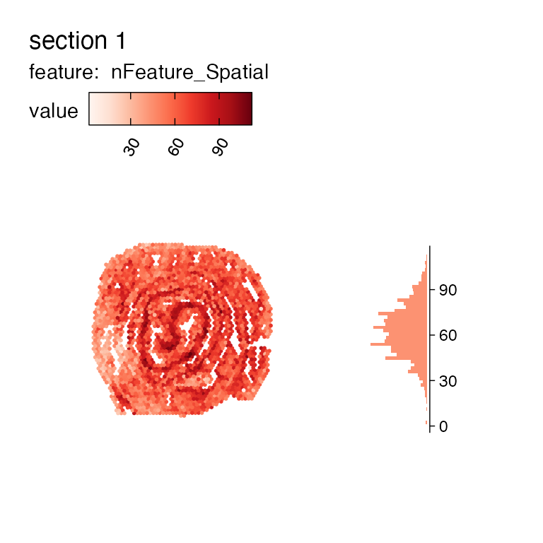
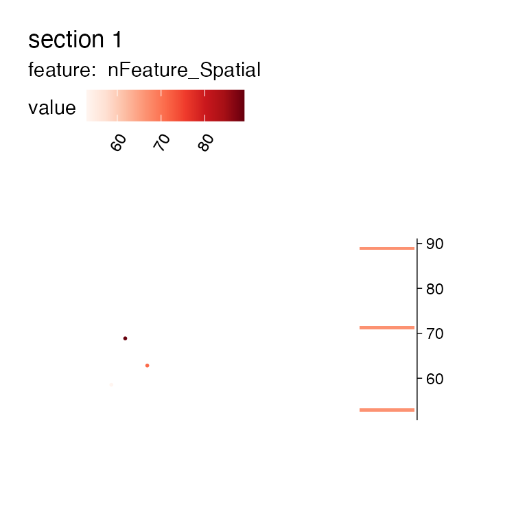
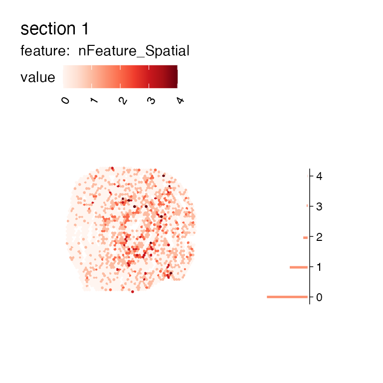
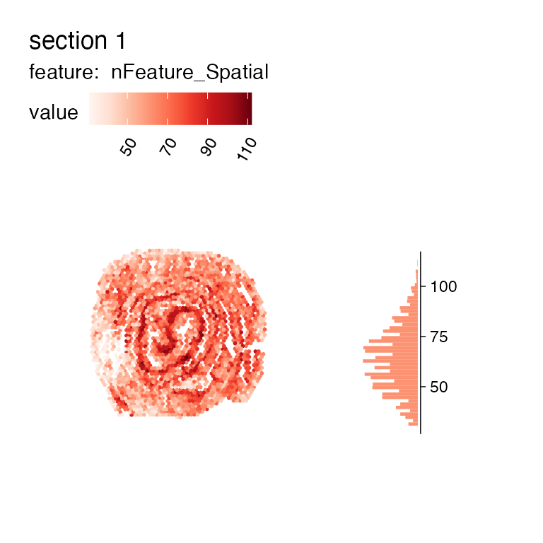
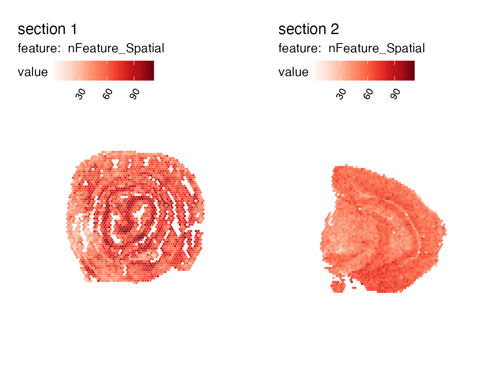

Subset and merge
Last compiled: 19 March 2025
subset_and_merge.rmdSubsetting and merging data is done using the two functions
SubsetSTData() and MergeSTData().
If you use the generic functions subset and
merge, these will work fine on Seurat objects
but they will not be able to handle the spatial data that has been
placed inside the Seurat object by semla,
causing the spatial data to be lost or corrupted.
Let’s load an example mouse brain 10x Visium data:
library(semla)
se_mcolon <- readRDS(system.file("extdata/mousecolon",
"se_mcolon",
package = "semla"))
se_mcolon## An object of class Seurat
## 188 features across 2604 samples within 1 assay
## Active assay: Spatial (188 features, 182 variable features)
## 2 layers present: counts, data
MapFeaturesSummary(se_mcolon, features = "nFeature_Spatial", subplot_type = "histogram")
Subset by selecting spots
The data can be subseted by specifying which spots to keep using their barcode ID.
spots_to_keep <- c("AAACAAGTATCTCCCA-1", "AAACACCAATAACTGC-1",
"AAACATTTCCCGGATT-1", "AAACCCGAACGAAATC-1",
"AAACCGGGTAGGTACC-1", "AAACCGTTCGTCCAGG-1")
# Subset using selected spots
se_mcolon_small <- SubsetSTData(se_mcolon, spots = spots_to_keep)
se_mcolon_small## An object of class Seurat
## 188 features across 3 samples within 1 assay
## Active assay: Spatial (188 features, 182 variable features)
## 2 layers present: counts, data
MapFeaturesSummary(se_mcolon_small, features = "nFeature_Spatial", subplot_type = "histogram")
Subset by selecting features
We can also extract data corresponding to a few selected genes of interest.
genes_to_keep <- c("Hbb-bs", "Hba-a1", "Hba-a2", "Hbb-bt", "Slc6a3", "Th")
# Subset using selected genes
se_mcolon_fewgenes <- SubsetSTData(se_mcolon, features = genes_to_keep)
se_mcolon_fewgenes## An object of class Seurat
## 6 features across 2604 samples within 1 assay
## Active assay: Spatial (6 features, 6 variable features)
## 2 layers present: counts, data
MapFeaturesSummary(se_mcolon_fewgenes, features = "nFeature_Spatial", subplot_type = "histogram")
Subset with an expression
If we want to subset data using information from the
meta.data slot, it might be easier to use an expression
instead. This comes in handy when we want to perform QC filtering on our
data.
# Filter by number of unique genes
se_mcolon_filtered <- SubsetSTData(se_mcolon, expression = nFeature_Spatial > 30)
se_mcolon_filtered## An object of class Seurat
## 188 features across 2545 samples within 1 assay
## Active assay: Spatial (188 features, 182 variable features)
## 2 layers present: counts, data
MapFeaturesSummary(se_mcolon_filtered, features = "nFeature_Spatial", subplot_type = "histogram")
Merge two data sets
Finally, we can use MergeSTData() to join two objects.
In this example, our colon data set will be merged with a brain data
set.
se_mbrain <- readRDS(system.file("extdata/mousebrain",
"se_mbrain",
package = "semla"))
se_merged <- MergeSTData(se_mcolon, se_mbrain)
unique(se_merged$sample_id)## [1] "mousecolon" "mousebrain"
se_merged## An object of class Seurat
## 188 features across 5164 samples within 1 assay
## Active assay: Spatial (188 features, 0 variable features)
## 2 layers present: counts, data
MapFeatures(se_merged, features = "nFeature_Spatial")
Package version
-
semla: 1.3.1
Session info
## R version 4.3.3 (2024-02-29)
## Platform: aarch64-apple-darwin20.0.0 (64-bit)
## Running under: macOS 15.3
##
## Matrix products: default
## BLAS/LAPACK: /Users/javierescudero/miniconda3/envs/r-semla/lib/libopenblas.0.dylib; LAPACK version 3.12.0
##
## locale:
## [1] en_US.UTF-8/en_US.UTF-8/en_US.UTF-8/C/en_US.UTF-8/en_US.UTF-8
##
## time zone: Europe/Stockholm
## tzcode source: internal
##
## attached base packages:
## [1] stats graphics grDevices utils datasets methods base
##
## other attached packages:
## [1] semla_1.3.1 ggplot2_3.5.0 dplyr_1.1.4 SeuratObject_5.0.1
## [5] Seurat_4.3.0.1
##
## loaded via a namespace (and not attached):
## [1] RColorBrewer_1.1-3 rstudioapi_0.15.0 jsonlite_1.8.8
## [4] magrittr_2.0.3 spatstat.utils_3.0-5 magick_2.8.3
## [7] farver_2.1.1 rmarkdown_2.26 fs_1.6.3
## [10] ragg_1.3.3 vctrs_0.6.5 ROCR_1.0-11
## [13] memoise_2.0.1 spatstat.explore_3.2-6 htmltools_0.5.7
## [16] forcats_1.0.0 sass_0.4.8 sctransform_0.4.1
## [19] parallelly_1.38.0 KernSmooth_2.23-22 bslib_0.6.1
## [22] htmlwidgets_1.6.4 desc_1.4.3 ica_1.0-3
## [25] plyr_1.8.9 plotly_4.10.4 zoo_1.8-12
## [28] cachem_1.0.8 igraph_2.0.2 mime_0.12
## [31] lifecycle_1.0.4 pkgconfig_2.0.3 Matrix_1.6-3
## [34] R6_2.5.1 fastmap_1.1.1 fitdistrplus_1.1-11
## [37] future_1.34.0 shiny_1.8.0 digest_0.6.34
## [40] colorspace_2.1-0 patchwork_1.2.0 tensor_1.5
## [43] irlba_2.3.5.1 textshaping_0.3.7 labeling_0.4.3
## [46] progressr_0.14.0 fansi_1.0.6 spatstat.sparse_3.0-3
## [49] httr_1.4.7 polyclip_1.10-6 abind_1.4-5
## [52] compiler_4.3.3 withr_3.0.0 highr_0.10
## [55] MASS_7.3-60 tools_4.3.3 lmtest_0.9-40
## [58] httpuv_1.6.14 future.apply_1.11.1 goftest_1.2-3
## [61] glue_1.7.0 dbscan_1.1-12 nlme_3.1-164
## [64] promises_1.2.1 grid_4.3.3 Rtsne_0.17
## [67] cluster_2.1.6 reshape2_1.4.4 generics_0.1.3
## [70] gtable_0.3.4 spatstat.data_3.0-4 tidyr_1.3.1
## [73] data.table_1.15.2 sp_2.1-3 utf8_1.2.4
## [76] spatstat.geom_3.2-9 RcppAnnoy_0.0.22 ggrepel_0.9.5
## [79] RANN_2.6.1 pillar_1.9.0 stringr_1.5.1
## [82] spam_2.10-0 later_1.3.2 splines_4.3.3
## [85] lattice_0.22-5 survival_3.5-8 deldir_2.0-4
## [88] tidyselect_1.2.0 miniUI_0.1.1.1 pbapply_1.7-2
## [91] knitr_1.45 gridExtra_2.3 scattermore_1.2
## [94] xfun_0.42 matrixStats_1.2.0 stringi_1.8.3
## [97] lazyeval_0.2.2 yaml_2.3.8 evaluate_0.23
## [100] codetools_0.2-19 tibble_3.2.1 cli_3.6.2
## [103] uwot_0.1.16 xtable_1.8-4 reticulate_1.35.0
## [106] systemfonts_1.0.5 munsell_0.5.0 jquerylib_0.1.4
## [109] Rcpp_1.0.12 globals_0.16.3 spatstat.random_3.2-3
## [112] zeallot_0.1.0 png_0.1-8 parallel_4.3.3
## [115] ellipsis_0.3.2 pkgdown_2.0.7 dotCall64_1.1-1
## [118] listenv_0.9.1 viridisLite_0.4.2 scales_1.3.0
## [121] ggridges_0.5.6 leiden_0.4.3.1 purrr_1.0.2
## [124] rlang_1.1.3 cowplot_1.1.3 shinyjs_2.1.0